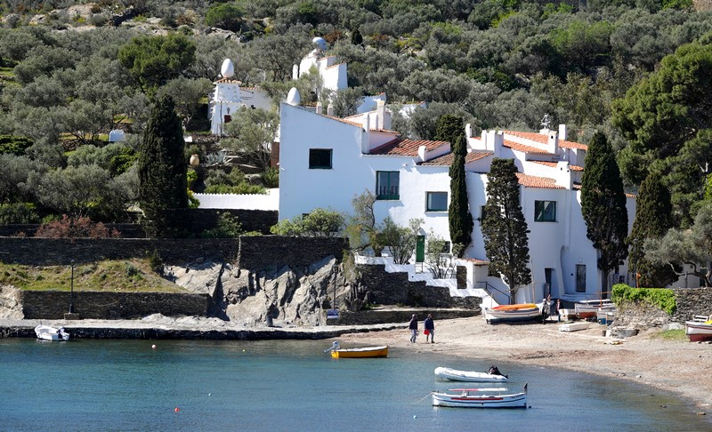

I went to Greece in 2018. I visited Athens, which was great for many reasons (food, weather, people's hospitality, and of course the monuments). Following that, I hired a car and I drove through the Peloponnese region, which is full of ancient iconic places (such as Olympia or Sparta). My best memory was the Delphi ancient site, just above Peloponnese. The site is well-preserved and the viewpoint is marvelous.

Spain is a famous vacation spot for Europeans when summer shows up. It has a lot of huge beach resorts. But it also has some quieter places. I enjoyed spending a few days in the very typical town of Cadaques, which is in the north of Barcelona, on the Mediterranean coastline. Streets are narrow, taverns serve great food, and you can get a bit of history since it is where the famous Spanish painter Dali lived.
